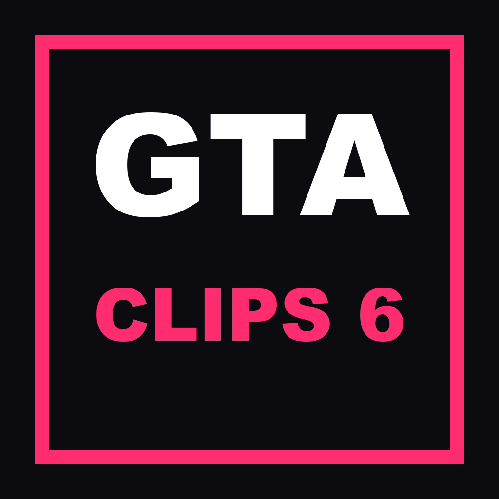

GTACLIPS6HQ
The best GTA 6 moments from the biggest streams. Full credit to the creators.
GTACLIPS6HQ is a personal tool run by the owner of the GTACLIPS6HQ accounts. It finds the most exciting moments in live GTA 6 streams and in new videos from selected creators, edits them into short vertical videos with captions, and publishes them to the GTACLIPS6HQ accounts on YouTube, Instagram, Facebook and TikTok. Every clip is first checked by an automated quality review; during the day the owner approves each one, and at night only clips from creators who allow clipping can be published automatically. Every post credits and links the original creator.
The tool only signs in to accounts owned by GTACLIPS6HQ. It has no public sign-up and no other users.